Seu cliente paga R$1.500/mês. E aprova post por print no WhatsApp? isso tá te custando caro
O CRIA transforma o seu serviço numa experiência de agência grande: portal de aprovação com a marca de cada cliente, relatório em 1 clique, CRM e financeiro no mesmo lugar. A conta é grátis. Você ativa só o que usar.
Novo Criakut beta: criadoras te acham por aqui →
Conta de social media gratuita · Você ativa só os módulos que precisar · Funciona no celular e no computador
CriakutBETA
onde quem cria encontra quem faz
Criadora que procura social mídia te acha pela cidade e pelo nicho. E quando você precisa de designer, editor ou filmmaker pra um cliente, acha aqui também, com preço e portfólio na página.
- Sua página, do seu jeitoCapa do Cria ou a sua, foto, "Oi, eu sou a...", serviços com preço e portfólio. Criadora mostra o Instagram e o que procura.
- Ache gente boa perto de vocêBusca por função, cidade, estilo e nicho. Dá pra marcar mais de uma função: designer e editora, por exemplo.
- Mural de trabalhosPublique o que precisa (12 reels por mês, um carrossel avulso) e receba propostas de quem faz.
- Proposta e conversa no CriaValor, prazo e entrega combinados num lugar só, sem expor seu WhatsApp. Depois, avaliação dos dois lados.
- Comunidades por nichoQuanto cobrar, reels que funcionam, publi e marcas. Tópicos pra trocar com quem vive o mesmo.
Vem junto com a sua conta do Cria durante o beta.
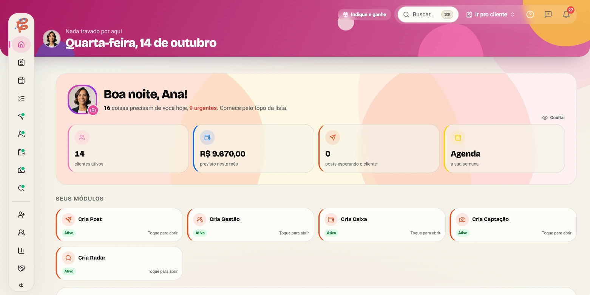
A sua semana, sem filtro
Abrindo o Notion pra tentar lembrar o que tem pra semana. Sobrou post de sexta? Quem ficou sem aprovar? Ninguém sabe.
"Oi, conseguiu ver os posts?" pela 4ª vez. A resposta chega em áudio de 4 minutos.
O post voltou "com um ajustinho" que você já tinha feito. Ficou 5 dias parado e a culpa sobrou pra você.
Quem pagou esse mês? A planilha não sabe. E você cobra com vergonha, como se o errado fosse você.
O problema não é você. É a operação picada em 5 apps que não se falam. O Notion não sabe o que o cliente aprovou. O WhatsApp não sabe quem pagou. A planilha não sabe de nada. E o cliente, que paga R$1.500, recebe experiência de R$150.
Seu cliente abre um link e vê a marca dele
Um portal dentro do CRIA com a logo e a cor DELE, com os posts do jeito que vão ficar no feed. Ele aprova do sofá, comenta no lugar certo, e você vê a hora exata em que ele visualizou. No fim do mês, o relatório sai em 1 clique e vai direto pro WhatsApp dele.
E o golpe de mestre: no Modo Agência, cada cliente seu ganha uma conta CRIA Studio completa, de graça, conectada à sua. Você para de vender "uns posts" e passa a entregar uma plataforma profissional junto do serviço. Quem entrega experiência de agência cobra preço de agência.
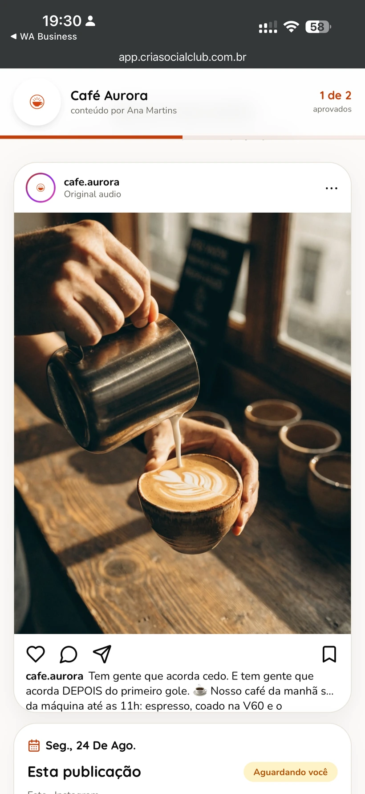
O que tem de novo no Cria
O que acabou de sair pro lado de quem atende clientes, e o que vem aí.
Criakut
Criadora te acha por cidade e nicho, e você acha designer e editor pros seus clientes.
Publicar depois do aprovado
O cliente aprova pelo link e o post sai do Cria, sem baixar e subir de novo.
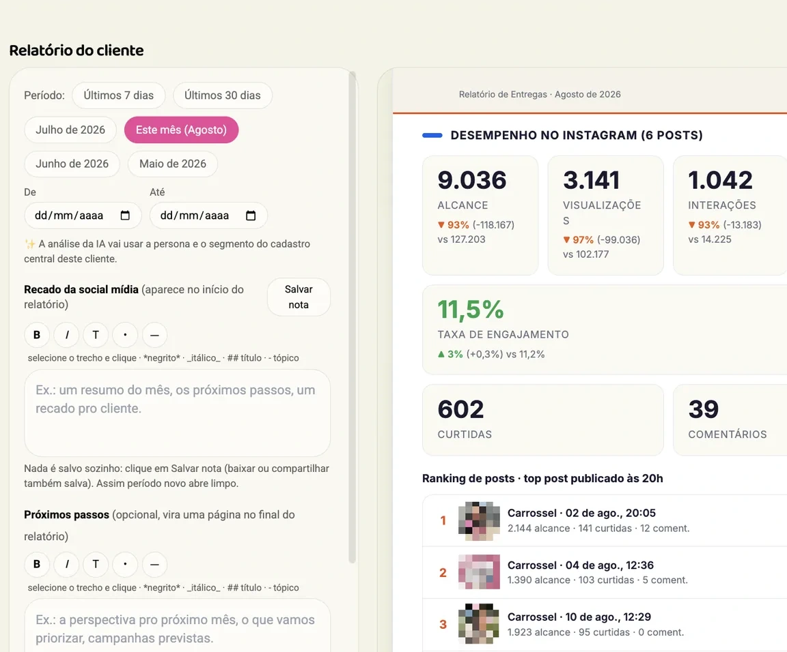
DestaqueRelatório em 1 clique
Com a marca do cliente e os números do Instagram dele, pronto pro WhatsApp.
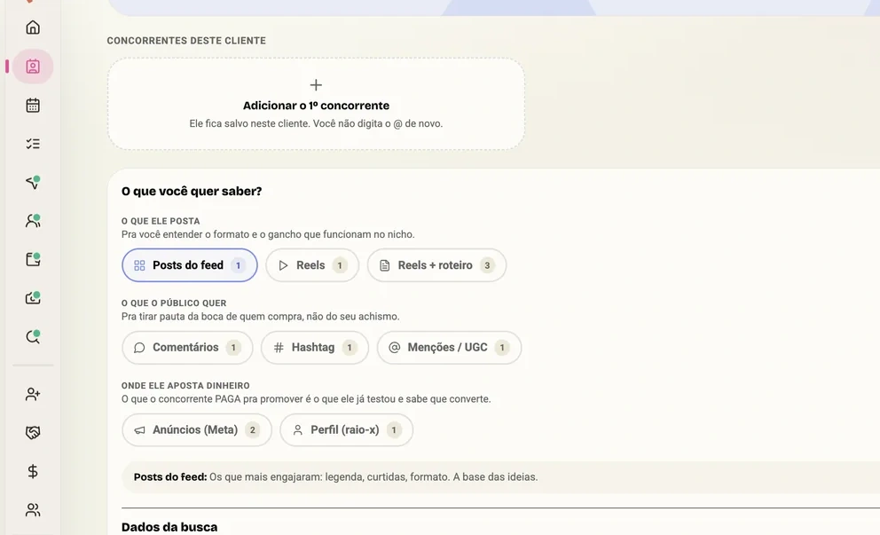
DestaqueCria Radar
O que os concorrentes do seu cliente postam e vira pauta pra reunião.
A operação inteira, módulo por módulo
A conta de social media é grátis e já vem com seus clientes organizados. Aí você monta a SUA operação: ativa só o módulo que resolve o seu gargalo de hoje, e o resto quando (e se) precisar.
Do lead ao contrato assinado
R$ 29,90/mês
CRM feito pro fluxo de social media: pipeline de prospecção, ficha do cliente, contrato, tudo ligado ao conteúdo que você produz pra ele.
- ✓ Pipeline visual: prospect → proposta → fechado
- ✓ Proposta comercial apresentável, enviada do próprio CRIA
- ✓ Ficha viva: se o cliente usa o CRIA, o brandbook, o Instagram e os posts dele aparecem na ficha, de verdade
- ✓ Contratos organizados, com vencimento à vista
- ✓ Agenda de criação: captações, tarefas e posts de todos os clientes num calendário só, com arrasta e solta
- ✓ Link na bio de cada cliente, em dois formatos: coluna de links ou um mini site com serviços, preço, depoimentos e blog. Você monta, o cliente só cola no Instagram
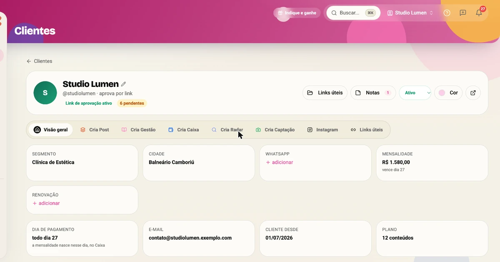
A ficha de cada cliente: contato, mensalidade, notas e as hashtags dele, tudo num lugar.O financeiro que você não abre por medo, resolvido
R$ 24,90/mês
Todo mundo que te paga, num painel: quanto já entrou esse mês, o que ainda falta cair, quem está atrasado e quanto realmente sobra pra você.
- ✓ A previsão do mês pronta, com as datas de cada mensalidade
- ✓ Quanto sobra de cada cliente: o que ele paga menos o que ele te custa
- ✓ O imposto já calculado no seu regime, sem susto no fim do mês
- ✓ Aviso de cliente atrasado e de reajuste na hora de renovar
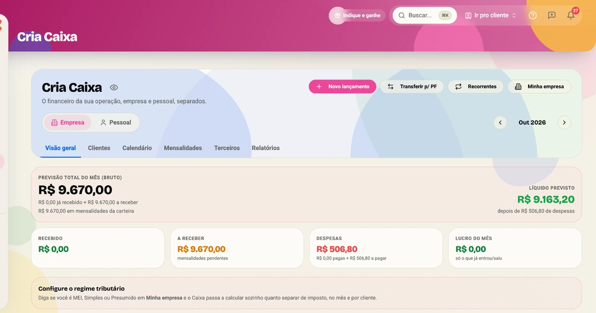
Quanto você já recebeu, o que ainda entra e quanto sobra no fim do mês.Aprovação por link. Acabou o áudio de 4 minutos.
R$ 19,90/mês
O cliente recebe um link, vê o post como vai ficar no feed, aprova ou comenta. Tudo com histórico: ninguém mais "não viu" nada.
- ✓ Cronograma do mês montado pela IA a partir da persona e dos pilares do cliente, aprovado por link
- ✓ Link de aprovação sem o cliente precisar de conta
- ✓ Portal com a logo e a cor de CADA cliente
- ✓ Você vê quando o cliente visualizou cada post
- ✓ Cliente usa o CRIA? Os posts prontos dele entram sem re-upload
- ✓ Relatório do mês em 1 clique, direto pro WhatsApp
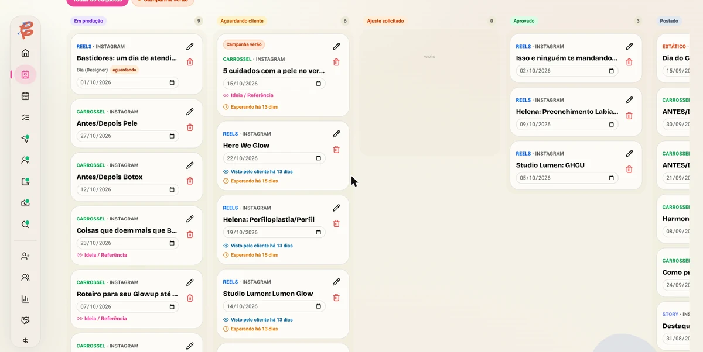
Cada post numa coluna: em produção, aguardando o cliente, ajuste, aprovado, publicado.Chegar no cliente sem saber o que gravar, nunca mais
R$ 19,90/mês
Você marca a captação, monta o roteiro antes e chega lá com tudo na mão: a folha do dia, a lista do que precisa ser gravado e o texto rolando no teleprompter enquanto a pessoa fala olhando pra câmera.
- ✓ Teleprompter com o roteiro do dia, direto no celular
- ✓ Folha do dia: tudo que vai ser gravado, na ordem
- ✓ Lista de tomadas: nada volta pra regravar depois
- ✓ Gravação que se repete toda semana, marcada sozinha
- ✓ Gravou? A captação vira post em 1 clique
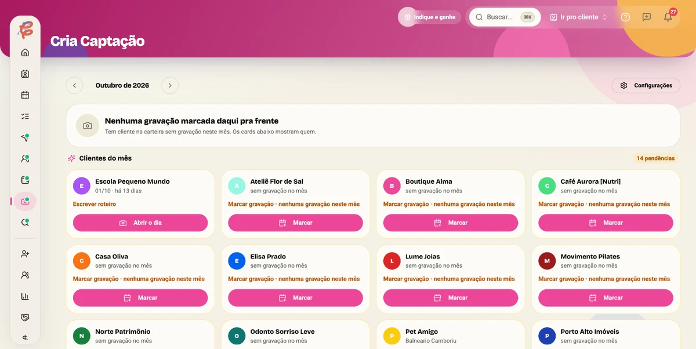
As gravações do mês, cliente por cliente: o que já gravou, o que falta e o que está sem roteiro.Já dá pra parar de pagar 4 ferramentas? Criar conta grátis →
Saiba o que os concorrentes dos seus clientes postam
R$ 49,90/mês
Análise de concorrentes + ideias sugeridas por cliente. Você chega na reunião de pauta com inteligência, não com achismo.
- ✓ Acompanhe perfis concorrentes por cliente
- ✓ Ideias geradas em cima do que funciona no nicho
- ✓ Inspiração sem stalkear manualmente
O relatório que levava 3 horas sai em minutos
Já vem no Cria Post
Insights reais do Instagram viram um relatório profissional, com a identidade do cliente. Ele vê tudo que foi produzido no mês. Chega de ficar encaminhando planilha ou print.
- ✓ Dados reais do Instagram, sem colar print
- ✓ Com a logo e a cor de cada cliente
- ✓ 1 clique e vai pro WhatsApp, todo fim de mês
- ✓ Com o Instagram do cliente conectado, as métricas reais entram no relatório sozinhas
Vários clientes, uma cabeça só
Recurso adicional · assento por cliente
Alterne entre clientes sem se perder: cada um com seu calendário, brandbook, aprovações e financeiro, e você com a visão geral de tudo.
- ✓ Cada cliente ganha uma conta Studio completa, de graça
- ✓ Troca de contexto por cliente em 1 clique
- ✓ Equipe: o primeiro colaborador é grátis (assento extra R$29,90)
- ✓ Visão geral: o que está travado em cada conta
E já vem junto, sem pagar nada a mais:
Tudo isto está na conta gratuita, antes de você ativar qualquer módulo.
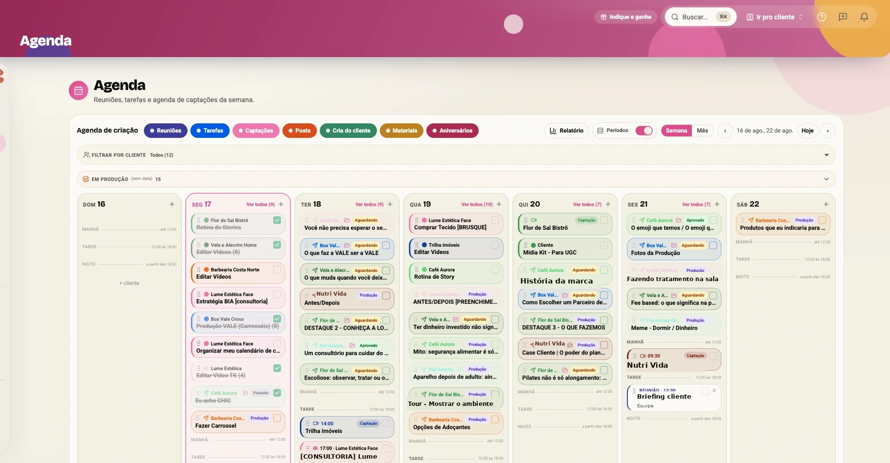
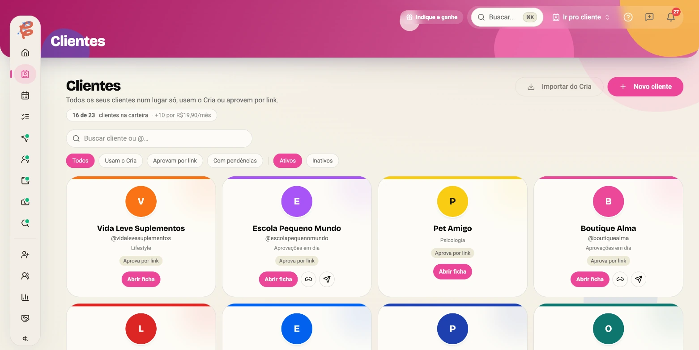
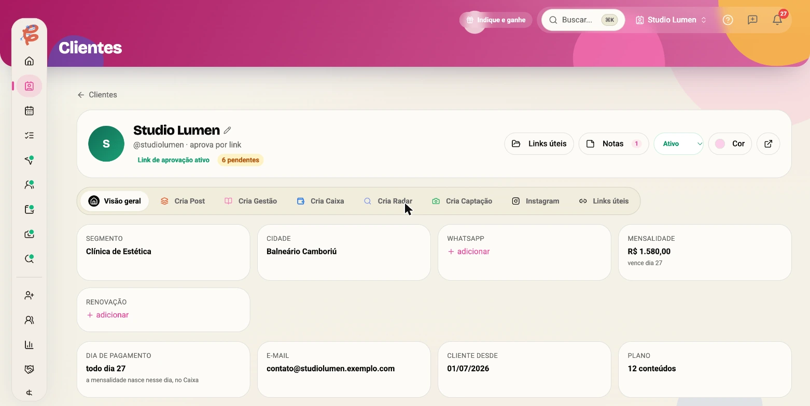
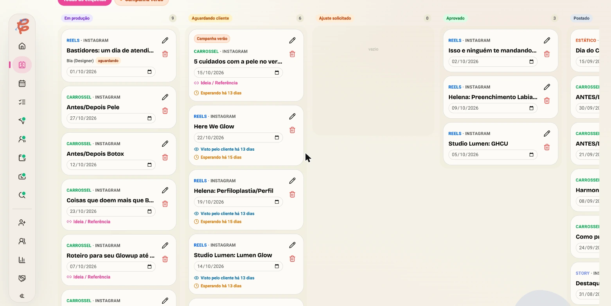
Reuniões, tarefas, captações e posts de todos os clientes num calendário só, com arrasta e solta.
Tudo que está esperando resposta de cliente, numa tela: você vê quem está travando o quê.
A carteira num painel, com o status de cada conta e quem precisa de você hoje. Precisa de mais? +10 clientes por R$19,90/mês.
O cliente manda login e senha das redes por um link seguro. Fica guardado com criptografia e você vê quem abriu cada acesso.
O cliente conecta o Instagram dele por um convite e os números de alcance e seguidores aparecem na ficha.
1º colaborador grátis na sua conta. Designer, editor e filmmaker entram como parceiros de produção, também de graça.
Sua página pra criadoras te acharem por cidade e nicho, e a busca pra você achar parceiros pros seus clientes.
Dois formatos no mesmo editor: coluna de links, ou um mini site com serviços, preço, depoimentos e blog. Um Linktree por cliente sai mais caro que o CRIA inteiro.
Seu cupom de parceiro: indicou o CRIA, recebe comissão recorrente enquanto a pessoa for assinante.
Entra grátis. Ativa só o que precisar.
A conta de social media é gratuita. Cada módulo você contrata à parte, dentro do app, quando fizer sentido: Cria Post e Cria Captação R$19,90, Cria Caixa R$24,90, Cria Gestão R$29,90. Sem pacote fechado, sem pagar pelo que não usa.
Criar minha conta grátisFunciona no celular e no computador
Abre direto no navegador, sem baixar nada de loja. E no celular vira aplicativo de verdade, com ícone e notificações.
No celular, vira app
Abre o CRIA no navegador, toca em "Adicionar à tela de início" e pronto: ícone no celular, tela cheia, do jeito de aplicativo. A operação anda com você na rua e na gravação.
Notificações que te puxam de volta
Cliente aprovou, prazo chegando, post do dia: o CRIA te avisa no celular. Você fica sabendo antes do cliente cobrar.
No computador, tela cheia
Mesma conta, sem sincronizar nada: kanban de todos os clientes, calendário do mês e relatórios com espaço de sobra pra planejar.
Você monta o seu plano.
a partir de R$0
Não existe pacote fechado aqui. A conta de social media é grátis pra sempre, e cada módulo é uma assinatura separada dentro do app: ativa hoje, cancela quando quiser, sem falar com ninguém.
Grátis pra sempre
Até 3 clientes num painel, a central de aprovações, a agenda da semana com tudo de todo mundo, cofre de acessos, 1º colaborador, parceiros de produção, Criakut e o programa de indicação. Sem cartão pra começar. Mais clientes: +10 por R$19,90/mês. Mais colaboradores: R$29,90/mês cada.
Aí você ativa só o que resolve o seu gargalo de hoje:
Seu cliente aprova por um link, do celular e sem criar conta. E o relatório do mês sai pronto, com a marca dele.
O dia de gravação organizado: roteiro no teleprompter, folha do dia e a lista do que gravar.
Quanto entra, quem está te devendo e quanto sobra de cada cliente, com o imposto já calculado.
Do primeiro contato ao contrato assinado: prospecção, proposta pronta pra enviar, estratégia do cliente e a ficha dele.
O que os concorrentes do seu cliente andam postando, já virando ideia de post pra você levar na reunião.
Gerencia muitos clientes? O Modo Agência é um recurso adicional que junta todos eles num painel só, com assento por cliente e conta Studio completa pra cada um.
Cria Post + Cria Caixa + Cria Gestão, que é o que a maioria ativa no primeiro mês:
Relatório na mão, aprovação por WhatsApp e financeiro na planilha custam cerca de 12 horas por mês. Se a sua hora vale R$100, são R$1.200 queimados em trabalho que não é criativo.
Seu cliente entra pelo link, aprova e recebe relatório sem pagar nada e sem criar conta.
Cada módulo é uma assinatura separada. Some ou tire módulo quando quiser, o valor acompanha.
Dentro do app, módulo por módulo. Sem ligação, sem multa, sem retenção. Seus dados continuam seus.
O mercado te vende picado
Uma ferramenta pra aprovar, outra pra relatório, um CRM adaptado e uma planilha. Você paga 4 vezes e ainda faz o trabalho de integração na mão.
*Preços de entrada anunciados pelos sites das próprias ferramentas em julho de 2026. Cada uma resolve um pedaço; a comparação é do combo necessário pra cobrir a operação inteira.
O que você deve estar se perguntando
"Mais uma ferramenta pra eu configurar? Não tenho tempo."
Não é mais uma ferramenta de organização pra você montar do zero. O CRIA já vem pronto: as etapas do post, o portal de aprovação, o relatório e a agenda já existem. Você só preenche as informações do cliente e começa a usar. A maioria organiza o primeiro cliente em menos de 1 hora, e o tempo volta já na primeira rodada de aprovação sem WhatsApp.
"Meu cliente mal responde no WhatsApp, vai usar um portal?"
Ele não precisa aprender nada: recebe um link, abre no celular e toca em aprovar. Sem cadastro, sem senha, sem app pra baixar. É mais fácil que responder o seu "oi, conseguiu ver?".
"R$19,90 + R$24,90 + R$29,90... isso não vira caro?"
Os três juntos dão R$74,70, menos de 1 hora do seu trabalho, cobrindo aprovação, CRM e financeiro. E você não precisa de tudo: começa pelo módulo do seu maior gargalo. Sem fidelidade, cancela dentro do app.
"Como funciona a cobrança, na prática?"
Você cria a conta de social media de graça, sem cartão. Quando ativar um módulo, o app abre o pagamento no cartão e a assinatura daquele módulo começa ali. Cada módulo é separado: pode ter só o Cria Post hoje e somar o Cria Caixa mês que vem. Tudo aparece numa área de assinaturas dentro do app.
"Sou criador de conteúdo também. Preciso de duas contas?"
Não, é o mesmo login. Do lado social media você gerencia os clientes com os módulos desta página. Se você também quiser o CRIA pro seu perfil (plano de conteúdo, ideias e legendas com IA, mídia kit, link na bio), isso é a conta de criador: uma assinatura à parte, que convive no mesmo acesso.
"Meu cliente precisa pagar alguma coisa?"
Não. Você gerencia a conta dele de graça: cria o cliente, produz, manda pra aprovação e entrega o relatório, sem custo nenhum pro cliente. E se ele quiser a conta de criador pra usar o CRIA por conta própria (planejamento, cronograma, ideias com IA, mídia kit), você libera pra ele no Modo Agência pagando o assento. Pra ele, é um benefício que veio de você.
"O Cria publica no Instagram do meu cliente?"
Ainda não. Hoje o cliente aprova pelo link e você publica como já faz. Publicar direto do Cria depois do aprovado está chegando: quando liberar, avisamos dentro do app.
"O que é o Criakut?"
É a vitrine de quem trabalha com conteúdo, dentro do Cria. Criadoras te acham por cidade e nicho, e você acha designer, editor e filmmaker pros seus clientes, com preço e portfólio na página. Está em beta e vem junto com a conta.
"E se eu quiser sair?"
Cancela dentro do app, em 2 cliques, módulo por módulo. Sem ligação, sem multa, sem retenção forçada. Seus dados continuam seus.
Seu próximo cliente vai te ver como agência ou como freelancer?
você decide hoje, de graçaConta de social media gratuita · Módulos à parte, sem fidelidade
O CRIA também tem o lado do criador: o Ciclo que tira sua ideia do bloco de notas e coloca no feed.